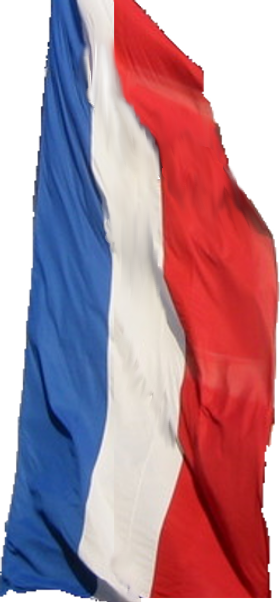
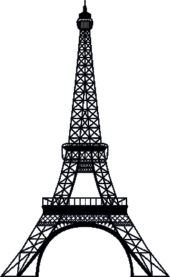

| Preparation |
|---|
| [Chapman] Chapter 4 |
| Slides |
|---|
| Chapter 3 - Bitmapped Images |
| Exercises |
|---|
| Useful links GIMP(If you want GIMP installed in English (and make my life slightly easier), then choose custom install and unselect all translations) GIMP user manual Official GIMP tutorials List of other GIMP tutorials |
| Exercise 1 - Basics Spend some time getting used to the program (most of you are probably used to working with programs like this, and in that case you can maybe skip some or all of this first exercise). Try adding any image you would like to experiment with, and play around with some of the different tools in the program (drawing tools, different selection tools, etc). Then try out some of the differenet adjustments (color balance, hue-saturation, brightness-contrast, blur, sharpening, etc). Add a new layer and add some new graphics to that. Add a layer mask to the new layer and experiment with various masks (drawings, gradient fills, images). When you feel you have a good basic understanding of how to work with bitmapped graphics, then you can move on. You don't have to do all the following exercises, but just pick the ones you feel like trying out. Exercise 2 - Selection Use your acquired skills to remove the background from some/all of the following images by choosing the best suited select tool. Select only the butterfly in this image Exercise 3 - Inkscape => GIMP All of the vector graphics you worked on last week (and maybe remembered to save as SVG files) can be opened in GIMP as bitmapped images. So, if you feel like continuing the work from last week, then you can now make some adjustments to your creations. Exercise 4 - Layer masks Try working more thoroughly with layer masks and use them to achieve some nice effects. You could simply recreate the example I showed you during the lecture (The graphics I used can be found here: Map, flag, Eiffel tower, but you are more than welcome to find some better looking images than the ones I found, e.g. something related to your own country). You could also try taking some of the abstract objects you created last week in Inkscape and use them as layer masks for various images, to achieve some interesting effects. Exercise 5 - Tutorials To better learn how to perform some of the effects and image manipulations, follow one or more of the Official GIMP tutorials, or create something nicer looking by trying one of the other tutorials here. |
{kind=link}
{kind=link}
{kind=link}